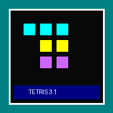

Alexey Pajitnov, engenheiro de computação da Academia de Ciências de Moscou, gostava do quebra-cabeça Pentamino, formado por peças de cinco quadrados. Ele recriou a ideia no computador Electronika 60, reduziu as peças para quatro blocos (os tetraminós) e acrescentou a queda e o encaixe em tempo real. O nome une o prefixo grego tetra ao tênis, seu esporte favorito.
Pajitnov passava cópias em disquete aos colegas, que ficavam viciados; segundo relatos, ele chegava a apagar os discos ao fim do expediente para que ninguém deixasse de trabalhar. Mesmo assim o jogo circulou de mão em mão. Vadim Gerasimov, então com 16 anos, levou o jogo para o IBM PC, e dali ele chegou à Hungria, onde surgiram versões para Apple II e Commodore 64. O Tetris tornou-se um dos primeiros produtos de sucesso exportados pela União Soviética.
O britânico Robert Stein, da Andromeda, viu o jogo na Hungria e negociou os direitos, repassando-os à Mirrorsoft e à Spectrum Holobyte, que o lançaram na Europa e nos EUA entre 1987 e 1988 e sublicenciaram a Atari, Sega e outras. A estatal soviética Elorg assumiu as negociações, e o contrato de Stein cobria apenas computadores pessoais, o que gerou uma disputa judicial a partir de 1989. Minoru Arakawa, da Nintendo of America, queria o Tetris como jogo de estreia do Game Boy; com a ajuda de Henk Rogers, a Nintendo conquistou os direitos.
Lançado junto com o Game Boy, o Tetris vendeu mais de 35 milhões de cópias nesse console e virou fenômeno mundial. Em 1993, um Game Boy com Tetris viajou à estação espacial Mir, onde ficou 196 dias e orbitou a Terra mais de 3 mil vezes.
Pajitnov mudou-se para os Estados Unidos em 1991. Em 1996 os direitos foram revertidos a ele, e junto com Henk Rogers fundou a The Tetris Company, que hoje cuida da marca.
Até dezembro de 2011 foram vendidas cerca de 202 milhões de cópias (aproximadamente 70 milhões físicas e 132 milhões de downloads pagos para celular). Disponível em mais de 65 plataformas, o jogo é o videogame mais adaptado do mundo segundo o Guinness, e a IGN o incluiu entre os dez jogos mais influentes de todos os tempos.
O chamado efeito Tetris descreve como jogar por muito tempo faz o cérebro continuar “encaixando” formas no dia a dia. Um estudo de 2014 da Universidade de Plymouth sugeriu que jogar Tetris pode reduzir a vontade de consumir calorias, álcool e cigarro. A disputa pelos direitos virou o filme Tetris (Apple TV+, 2023), com Taron Egerton.
Fonte: Wikipédia – Tetris
Tetris® é marca registrada de The Tetris Company. Este projeto é uma homenagem independente, sem vínculo oficial.
Sua partida terminou. Digite seu nome para entrar no Ranking.